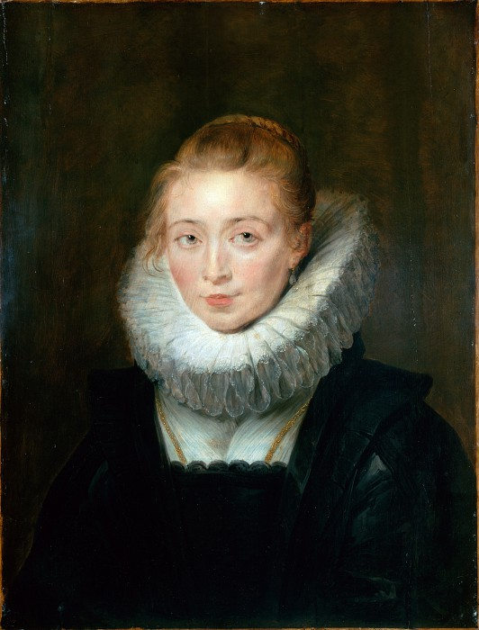

Портре́т камери́стки инфа́нты Изабе́ллы ( (флам.) Sael doegter van de Infante tot Brussel) — картина работы Питера Пауля Рубенса. Портрет изображает придворную даму Изабеллы Клары Евгении. Датируется приблизительно 1623—1626 годами. С 1772 года картина находится в экспозиции Эрмитажа. Картина является нехарактерным для творчества Рубенса обращением к жанру психологического портрета.